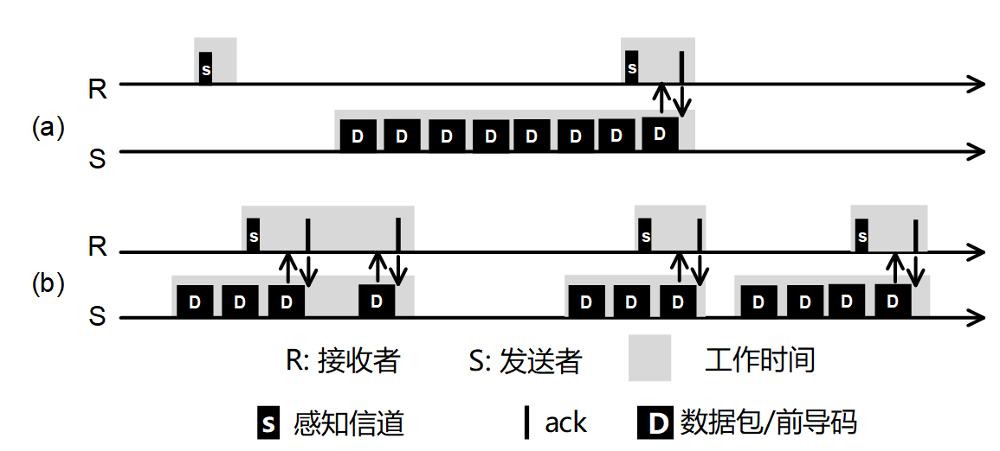

8.1.1 低占空比网络
无线数据收发是能量消耗的主要操作[1][2][3]。比如在一个典型的无线传感网节点TelosB上[22]，微型处理器单元MCU的能耗电流通常在微安级别，在MCU低功耗模式下甚至更低。而数据收发模块（或称无线模块，radio）在发送和接收数据的时候能耗电流能达到20毫安左右。即使在没有数据收发的时候，数据收发模块需要侦听（感知）信道以判断是否有数据包到达（又称为空闲侦听，idle listening），这部分能耗电流也在20毫安左右。由此可见，无线传感网节点无线模块是能量消耗的主要来源[1][2][3]。无线模块空闲侦听造成了大量能量消耗。随着现在技术的发展，数据发送和接受的能耗电流也在改进，但是能量浪费的现象仍然存在。因此减少无线收发模块的能量消耗特别是减少空闲侦听的能量消耗是降低无线传感网节点能耗的一个重要手段，也成为无线传感网领域里面一个研究热点和重要的研究方向。
针对这一个问题，国内外出现了很多相关研究工作。在这些研究工作中，针对无线模块能耗特点，一个重要的思路是使节点不再长期处于数据发送、接收和侦听的状态，节点会周期性的关闭数据收发模块，达到降低能耗的目的。如图1所示，R代表接收节点，S代表发送节点，在数据发送过程中，接收节点和发送节点不再一直将无线模块保持在打开状态。接收节点周期性地打开无线模块，当侦听到信道中有信号存在时，保持在打开状态以接收数据。当侦听不到信号存在时，就关闭数据收发模块以降低能量消耗。通过这样的方法，我们可以从图1中看出，可以降低了节点的能量消耗。这种工作模式我们称之为低占空比低功耗传输模式，也成为了无线传感网低功耗传输的重要手段。虽然这样的一类思想成为了现在无线传感网中减少能耗的重要手段，但是在实际应用的时候仍然面临着一系列尚待解决的问题。现有的协议不能适应网络动态变化，如负载变化等，现有协议没有全面分析协议中影响能耗的重要参数，实现能耗的最优化。而在实际网络中，通常处于不同位置、不同时间的节点，负载是不一样的，导致了现有协议无法很好的应用到实际网络中。

图1. 典型低功耗协议示意图
进一步随着物联网和移动网络的发展，大量的物联网和移动网络的终端设备将会应用到生产和生活的各个方面。在物联网和移动网络的终端设备中，由于应用环境和实际设备的限制，大量设备同样将不具有稳定的能量来源。电量供应仍然会非常有限和宝贵，同时网络环境将会更加复杂和动态，因此在动态负载的网络环境中降低能耗，实现负载自适应的低功耗传输也成为这一类设备上的重要需求。通过负载自适应低功耗传输技术，能够降低设备能量消耗，延长工作时间，增加网络和设备的可用性。因此随着物联网和移动网络的发展，自适应低功耗传输技术将会有更加广泛的应用范围，对物联网和移动网络应用的发展也将会起到极大的促进作用。
我们对现有无线传感网中低功耗传输协议进行了广泛的调研和分析。总体来看，现有的方法主要分为如下几类。
第一类方法为基于同步的低占空比低功耗传输模式。在这一类方法中，发送者和接收者需要进行时间同步，从而发送者能够准确知道接收者侦听信道和打开信道的时间，发送者能够在接收者打开信道的时候进行数据发送，比较有代表性的方法有K. Langendoen提出的协议[1]和其他协议[2][3]等。这一类的方法依赖于发送者和接收者之间的精确的时间同步[17]。但是时间同步给资源有限的无线传感网节点设备带来了额外的能量消耗，时间同步的误差也造成了协议性能的降低，限制了协议的使用范围。
第二类方法是异步低占空比低功耗传输模式。在这一类方法中，发送者和接收者不需要进行时间同步。接收者周期性打开信道并侦听信道。发送者在有数据需要发送的时候，将会发送一个加长的前导码（preamble），前导码的长度比接收者睡眠时间更长，因此能够保证接收者听到前导码从而保持信道打开以接收数据。这一类中比较典型的方法有B-MAC [4]。在基本的异步低占空协议中，发送者发送一个冗长的前导码来保证接收者能够听到发送者的数据。在这一基础上，有一系列改进的数据发送方法，比如在X-MAC [5]中，发送者不再发送冗长的前导码，而是不断发送小的ADV包。基于ADV包的方法，接收者听到ADV包后，将会返回一个ACK包通知发送者，这样发送者可以再进行数据包的发送。通过这样的方法[5][7]，避免了发送者冗长前导码的发送。在Box-MAC中[6]，发送者持续发送真实需要传输的数据包，接收者收到数据包后返回ACK通知发送者。这样的方法进一步避免了发送ADV包带来的能量浪费。在MiX-MAC中[8]，节点根据当前网络模式（如广播、单播等），选择合适的数据发送方法，从而达到降低能耗的目的。在T-MAC中[9]，发送者在接收者醒来之后将数据累积起来进行发送，降低了平均数据包的能量消耗。还有一类方法是从接收者角度（receiver-initiated）出发，发送者有数据发送时不再持续产生信号，而是等待接收者醒过来之后发送的通知数据包，然后再进行数据发送，比较典型的方法有[23][24]。
第三类方法是低功耗传输协议的调整和优化方法。在低功耗传输协议中，有几个重要的参数。第一个是节点关闭数据收发模块（又称为睡眠）的时间。如图1所示，在睡眠时间内，节点无法进行数据发送和接收。第二个参数是节点醒来之后打开模块的时间，在这段时间内节点可以进行数据的发送和接收。MS-MAC [10]提出了一个调整睡眠和醒来周期的方法。DMAC [11]提出了一个根据路由结构进行参数调整的方法。在DMAC中，在一条路径上的所有节点将会不断调整醒睡周期，从而使得路径上节点的醒睡周期呈现出流水线的形式，使得上一个节点收到的数据能够尽快的发送给下一个节点。[12][13]提出了两种不同的启发式参数设置方法，通过启发式的方法对参数进行设置，从而减少能量消耗。[25]提出了一种结合CSMA和TDMA的方法来处理节点上积累的流量，但是这个方法并未提出能耗最优化的策略。方法[26][27]提出了负载变化时参数调整的方法，但是尚不能保证提出方法的性能，也不能对功耗进行最优化。方法[28][29]提出了跨层对低占空比协议进行改进的方法。方法[30][31]中提出了减少低占空比协议延迟和提高协议稳定性的方法。GDSIC [14]提出了一个分布式参数调整的方法均衡整个网络所有节点能耗。IDEA [15]提出了一个参数调整的架构，可以根据节点当前能量状况对节点参数进行在线调整。除此之外，还有一些集中式的参数调整方法， pTunes [16]提出了集中式的参数调整算法，通过收集网络信息和集中的计算，得到最优化的网络参数，再分发到实际网络中。
 网络不同参数对能量消耗的影响 图2. 网络不同参数对能量消耗的影响
动手做实验：¶
如何设计一个高效的录音软件。